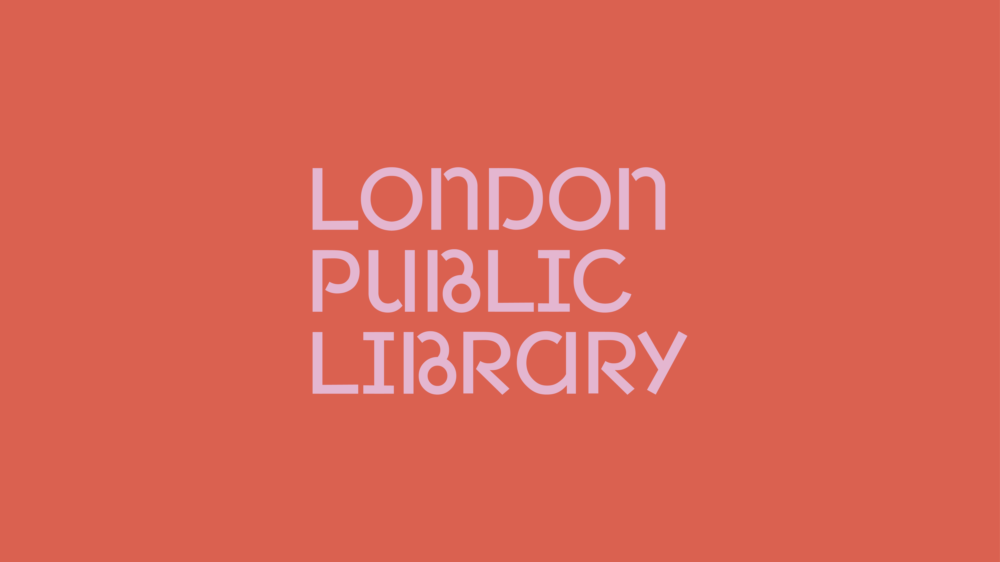
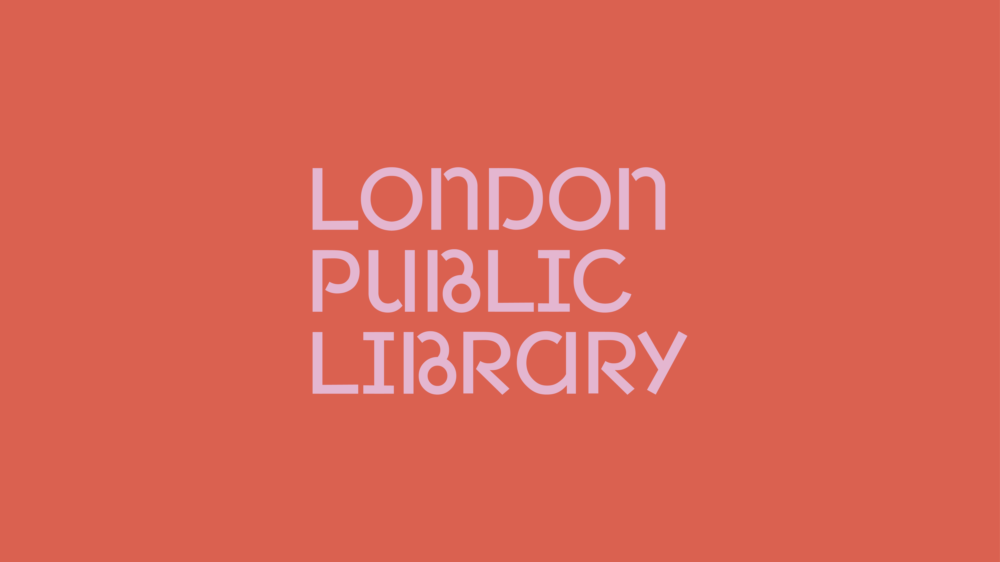
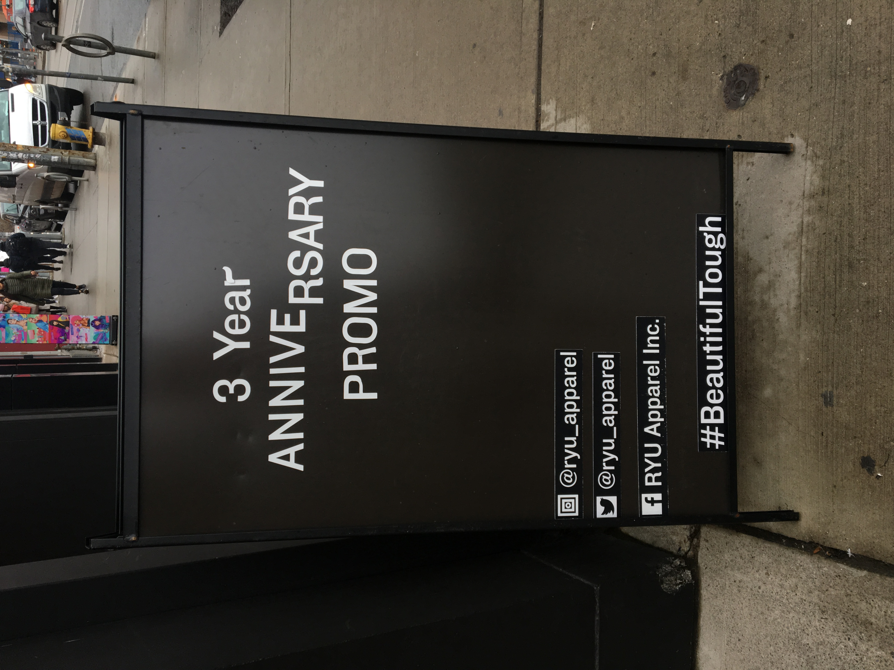
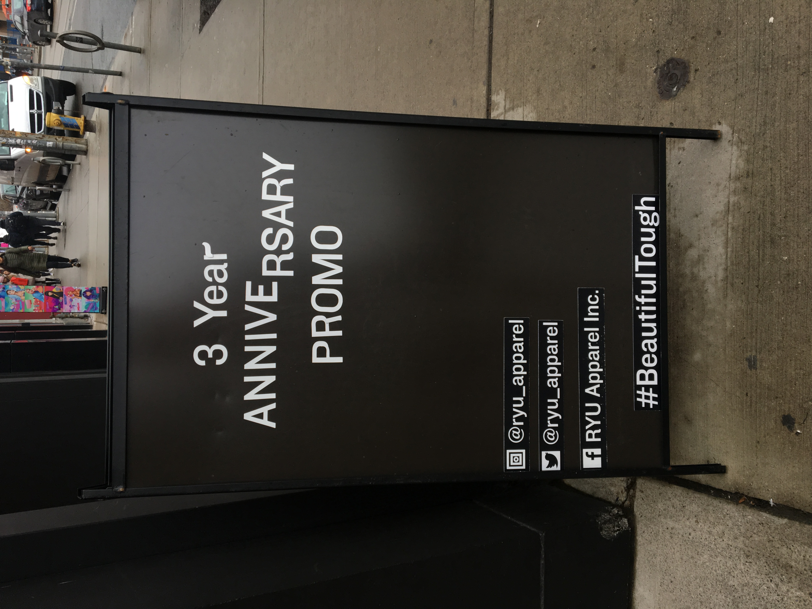
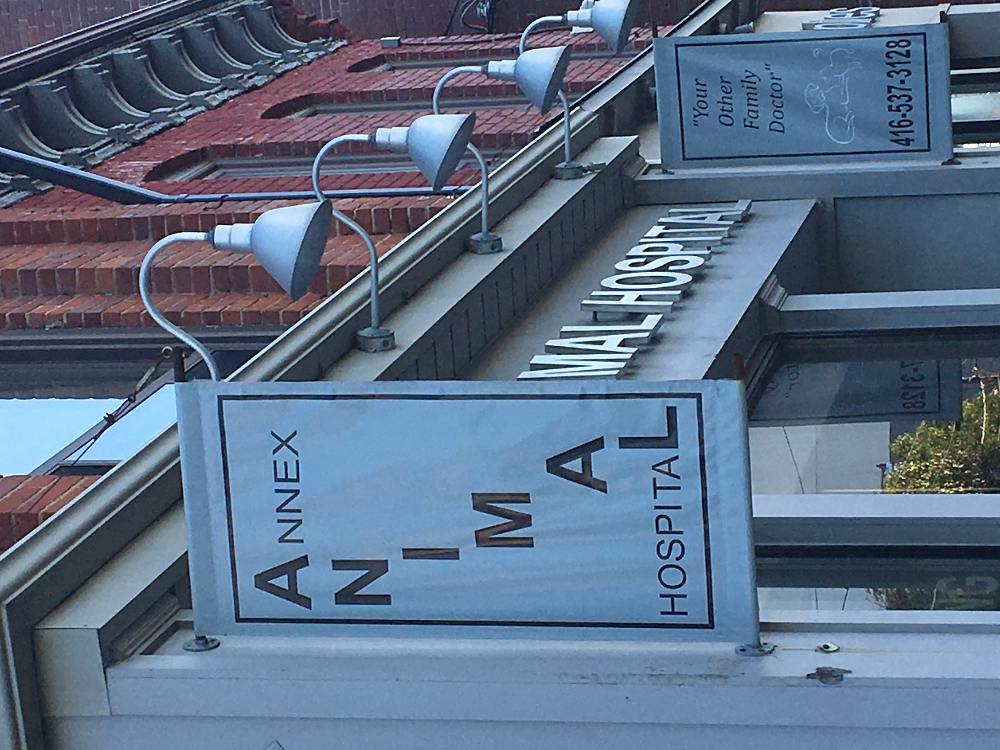
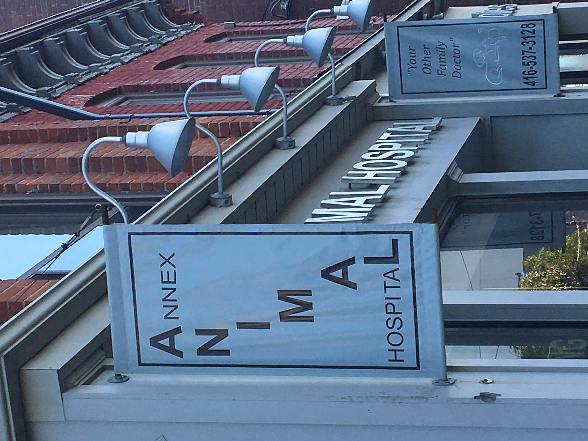

| Hi Concrete, I’m Christine Xia. |
|---|
| BDes in Graphic Design from OCAD University |
| Some other things: 1, 2, 3. |


Defunkt — typeface
| Hi Concrete, I’m Christine Xia. |
|---|
| BDes in Graphic Design from OCAD University |
| Some other things: 1, 2, 3. |
| Letterforms: a lifelong love | |
|---|---|
| Picking thing apart... | |
| ...and finding nice moments too. | |

|
Defunkt


|
Rave in Berlin 1100


|
Monday Night Seminars


|
London Public Library


 



|
|

|
|


 



 

| Letterforms: a lifelong love | |
|---|---|
| Picking thing apart... | |
| ...and finding nice moments too. | |
|
|
Defunkt
|
|
Rave in Berlin 1100
|
Monday Night Seminars
|
|
London Public Library
|
|
|
|
|
Defunkt
// Typeface (regular and italic), 16 × 36 in specimen poster.
Swooshes, ink traps, and alternate glyphs galore, Defunkt is a new typeface that carries on the tradition of weird and awkward grotesques. This is an avenue that has absolutely already been explored, but why not keep having fun? Defunkt seeks to inherit the conventions that define its predecessors but implements glyphs with high-contrast and dramatic strokes. With display use as their goal, characters slope in and out with gusto to produce unusual and energetic forms. Where strokes are often thin, they are thick; where they are usually wide and strong, forms are pinched and narrow; letterforms shrink, grow, and confidently flare out.
Essentially Anonymous
// Pair of 5 × 7 in hardcover books.
Essentially Anonymous is a two-part installation comprised of two books, one that can touched and flipped through and another that is out-of-reach and unknowable. Both books are comprised of expedition photographs collected from the American Museum of Natural History’s digital archives; the untouchable book in the corner is filled with nameless photographs of people taken by researchers during these expeditions while the in-reach book puts the faces of said researchers on display for viewers to examine. These images are interspersed with a poem addressing the conflicts within the act of speaking for others and documenting experiences outside of your own. This work is a part of my undergraduate capstone project to be completed in May 2020 that addresses the issue of disinterring history and speaking about the pain of others.
The untouchable book rests above the viewer’s head, with its pages almost out of sight, positioned in the icon corner to pay a modest tribute to these anonymous individuals by transforming the book they reside in into a type of worship space or alter. Instead of their anonymity taking away from their individuality, this type of anonymity removes these people’s faces and bodies from display altogether and returns the control of visibility back to these individuals. In contrast, the book that viewers are able to touch and see is filled with images of the expeditioners, the ones that have performed questionable acts of documentation. Both books are nearly identical: same number of pages, same text, same size. The only difference is the portraits that have been swapped out. With antiquated and unethical anthropological research practices often putting the most vulnerable people on display, this pair of books does the opposite by putting the perpetrators on display.
Below is the poem that is woven between the portraits within each book:
You do not know me and I can never know you.
I want to be seen but I do not want to be watched.
I do not want to be watched but I want to be visible.
I want to be visible but I do not want to be surveilled.
I do not want to be surveilled but I want to be present.
I want to be present but I do not want to leave my past.
I do not want to leave my past but I want to grow.
I want to grow but I do not want to leave.
I do not want to leave but I want to explore.
I want to explore but I do not want to overstep.
I do not want to overstep but I want to understand.
I want to understand but I do not want to judge.
I do not want to judge but I want to make connections.
I want to make connections but I do not want to be vulnerable.
I do not want to be vulnerable but I want to be receptive.
I want to be receptive but I do not want to be naive.
I do not want to be naive but I want to admire.
I want to admire but I do not want to stare.
I do not want to stare but I want to be curious.
I want to be curious but I want to be respectful.
I want to be respectful but I do not want to be governed.
I do not want to be governed but I want to belong.
I want to belong but I do not want to lose myself.
I do not want to lose myself but I want to participate.
I want to participate but I do not want to perpetuate.
I do not want to perpetuate but I want to create momentum.
I want to create momentum but I do not want to be misguided.
I do not want to be misguided but I want to demystify.
I want to demystify but I do not want to expose.
I do not want to expose but I want to speculate.
I want to speculate but I do not want to exploit.
I do not want to exploit but I want to wonder.
I want to wonder but I do not want to misinform.
I do not want to misinform but I want to educate.
I want to educate but I do not want to overshare.
I do not want to overshare but I want to be vocal.
I want to be vocal but I do not want to silence.
I do not want to silence but I want to be represented.
I want to be represented but I do not want to be captured.
I do not want to be captured but I want to be remembered.
I want to be remembered but I do not want to live forever.
I do not want to live forever but I want to live forever.
I want to live forever but I do not want to live forever.
I do not want to live forever but I want to live forever.
May your image rest peacefully.
Thank you and talk soon,
Christine Xia
hi@xiaxiaxia.design
(647) 831-4138
View my full portfolio & CV.
Hi, Concrete
View live site